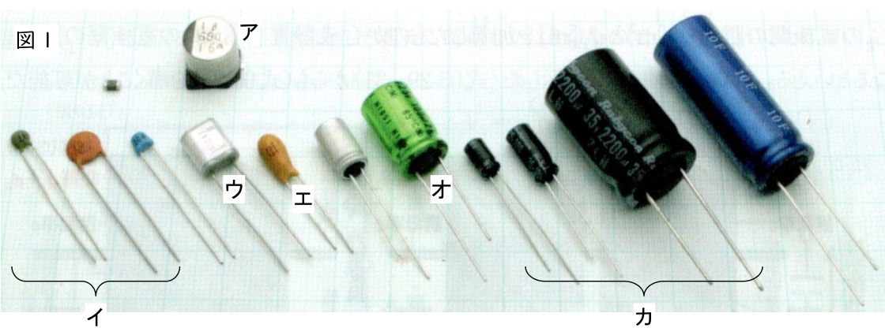
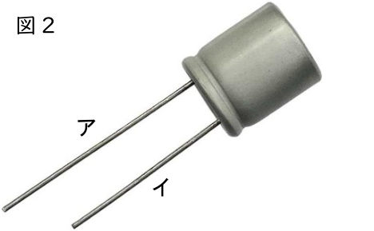
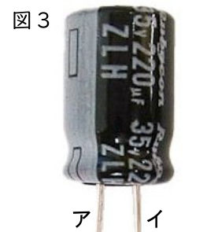
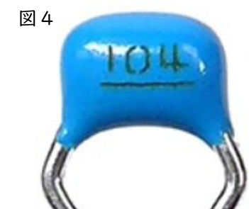

コンデンサ
平行板コンデンサ
コンデンサをひと言でいうと 電気をためるもの です。呼び方は“コンデンサー”や“キャパシタ（キャパシター）”ともいう。まずは，簡単な構造の平行板コンデンサについて見てみましょう。作り方は超簡単。2枚のアルミ箔で下敷きを挟んだだけ。アルミ箔を電極や極板といい，中に挟むもの誘電体という。コンデンサの充電→放電を見てみましょう。
充電 ～ 放電 の過程で，電荷がどう動くか押さえておきましょう。
充電
放電
ポイント 動くのは電子（－）だけ。充電では，電池が上の極板の電子を下の極板へ運ぶので，上の極板は＋，下の極板は−になる。極板の間は誘電体（絶縁体）なので電子は通れず，電池をはずしても電荷はたまったまま。豆電球などをつなぐと電子が戻り（放電），両方の極板の電荷が 0 になったところで電流は止まる。
コンデンサにたまった電気量 \(Q\) は極板間の電圧 \(V\) に比例する。また，コンデンサの形状を示した値 \(C\) のことを 静電容量（電気容量） という。単位は F（ファラド）。\(C\) も \(V\) も大きいほどよくたまる。
練習問題①
- 図１の回路において，スイッチSをa端子につなぎ，コンデンサAを充電したところ，電荷が 4〔C〕だけ移動した。このときにコンデンサAにたまった電荷は何 C か。
- 続いて，スイッチSをb端子に切り替え，Aと同じ形状のコンデンサBと図２のように接続した。コンデンサBにたまった電荷は何 C か。
- 図３のように，形状の異なるコンデンサA，Bを直列につなぎ，その両端に電池をつないだところ，極板aに +6〔C〕の電荷がたまった。極板b，c，dにはそれぞれいくらの電荷がたまっているか。
解説
(1)
充電では，電池が一方の極板から他方の極板へ電子を運ぶ。4 C 分の電荷が移動すると，片方の極板は +4 C，もう片方は −4 C になる。このときを「電荷が 4 C たまった」という（ポイントの「電荷が 3 たまった」と同じ）。
(2)
スイッチを b に切り替えると，電池は切りはなされ，A と B がつながる。A にたまっていた 4 C が B へも流れ，A と B の電圧が等しくなったところで止まる。A と B は同じ形状（同じ静電容量 \(C\)）なので，電圧が等しければ \(Q = CV\) より電荷も等しい。電荷の合計 4 C は変わらないので，半分ずつに分け合う。
(3)
コンデンサの2枚の極板には，必ず同じ大きさで逆符号の電荷がたまる。a が +6 C なので，同じコンデンサAの b は −6 C。
b と c は導線でつながっていて，電池ともつながっていない「島」になっている。はじめこの島の電荷は 0 なので，b が −6 C なら c は +6 C（合計 0 のまま）。c と d は同じコンデンサBの極板なので，d は −6 C。
ポイント 直列につないだコンデンサには，どれも同じ大きさの電荷がたまる（形状が違っても）。
練習問題②
- 静電容量が 3.0 μF のコンデンサに 1.5 V の電圧を加えると，何 C の電荷が蓄えられるか。（\(\mu\)（マイクロ）：\(\times 10^{-6}\)）
- あるコンデンサに 12 V の電圧を加え十分に時間が経過したところ，\(6.0\times 10^{-5}\) C の電荷がたまった。このコンデンサの静電容量は何 F か。
- 静電容量が 1.5 pF のコンデンサに \(3.0\times 10^{-10}\) C の電荷がたまっている。このコンデンサの両端に加えた電圧は何 V か。（p（ピコ）：\(\times 10^{-12}\)）
解説
どれも \(Q = CV\) に，わかっている2つの量を代入して残りの1つを求める。μ や p は 10 の累乗に直してから代入する。
(1)
\(C = 3.0\,\unit{μF} = 3.0\times 10^{-6}\,\unit{F}\)，\(V = 1.5\,\unit{V}\) を \(Q = CV\) に代入する。
(2)
\(Q = CV\) に \(Q = 6.0\times 10^{-5}\)，\(V = 12\) を代入し，\(C\) について解く。
(3)
\(C = 1.5\,\unit{pF} = 1.5\times 10^{-12}\,\unit{F}\) と \(Q = 3.0\times 10^{-10}\) を \(Q = CV\) に代入し，\(V\) について解く。
指数の割り算は \(10^{-10}\div 10^{-12} = 10^{-10-(-12)} = 10^{2}\)。
練習問題③
はじめ，コンデンサには電荷はたまっていない。図１の回路において，スイッチSをaにつなぎ，静電容量 \(C\) のコンデンサAの両端を電圧 \(V\) で充電した。次に，図２のように，スイッチSをbにつなぎ，静電容量 \(C'\) のコンデンサBとコンデンサAを接続した。
(1) \(V = 3.0\) V，\(C = C' = 1.6\) F とし，次の (ア)〜(ウ) の問いに答えよ。
- (ア) 図１のとき，コンデンサAにたまった電気量 \(Q_\text{A}\) は何 C か。
- (イ) 図２のとき，コンデンサBにたまった電気量 \(Q_\text{B}'\) は何 C か。
- (ウ) 図２のとき，コンデンサBの両端の電圧 \(V'\) は何 V か。
(2) \(V = 4.0\) V，\(C = 3.0\) F，\(C' = 1.0\) F とし，次の (エ)〜(カ) の問いに答えよ。
- (エ) 図１のとき，コンデンサAにたまった電気量 \(Q_\text{A}\) は何 C か。
- (オ) 図２のとき，コンデンサBにたまった電気量 \(Q_\text{B}'\) は何 C か。
- (カ) 図２のとき，コンデンサBの両端の電圧 \(V'\) は何 V か。
解説
考え方 図２では電池が切りはなされるので，A にたまっていた電荷 \(Q_\text{A}\) の合計は変わらない（逃げ場がない）。その電荷を A と B で分け合い，A と B の電圧が等しく（\(V'\)）なったところで落ち着く。\(Q = CV\) より，電圧が等しければ電荷は静電容量に比例して分かれる。
(ア)
図１では A に電池の電圧 \(V\) がかかるので，\(Q = CV\) に \(C = 1.6\)，\(V = 3.0\) を代入する。
(イ)
\(C = C'\) なので，4.8 C を A と B で同じだけ分け合う。
(ウ)
B について \(Q = CV\) を使う。\(Q_\text{B}' = 2.4\)，\(C' = 1.6\) を代入して \(V'\) について解く。
(エ)
(ア) と同じく \(Q = CV\) に \(C = 3.0\)，\(V = 4.0\) を代入する。
(オ)
A と B の電圧は等しいので，電荷は静電容量の比 \(C : C' = 3.0 : 1.0 = 3 : 1\) に分かれる。12 C を 3 : 1 に分けると，B の分は全体の \(\dfrac{1}{4}\)。
（A には残りの 9.0 C が残る。A の電圧も \(9.0 \div 3.0 = 3.0\,\unit{V}\) で，B と等しくなっている。）
(カ)
B について \(Q = CV\) に \(Q_\text{B}' = 3.0\)，\(C' = 1.0\) を代入する。
別の解き方 電荷の合計が変わらないことを式にすると \(CV' + C'V' = Q_\text{A}\)。よって \(V' = \dfrac{Q_\text{A}}{C + C'}\)。(2) なら \(V' = \dfrac{12}{3.0 + 1.0} = 3.0\,\unit{V}\)，(1) なら \(V' = \dfrac{4.8}{1.6 + 1.6} = 1.5\,\unit{V}\)。
練習問題④（教 p.186-188 参照）
下の (1)〜(6) の各問いに答えよ。




- 図１（教 p.186 の写真 04-01）のア〜カのコンデンサの名称を答えよ。
- 図１のウとカのコンデンサの誘電体をそれぞれ答えよ。
- 図２のコンデンサは極性をもつ。ア・イのどちらのリード線がプラス（正極）か。
- 図３のコンデンサは極性をもつ。ア・イのどちらのリード線がプラス（正極）か。
- コンデンサの「定格電圧」とは何か。簡潔に説明せよ。
- 図４のコンデンサの静電容量は何 F か。
解説
(1)
ア：チップ電解コンデンサ（基板の表面に直接はんだ付けする小形の電解コンデンサ），イ：セラミックコンデンサ，ウ：フィルムコンデンサ，エ：タンタルコンデンサ，オ：無極性電解コンデンサ，カ：電解コンデンサ。
(2)
フィルムコンデンサ（ウ）は，ポリエステルなどの合成樹脂（プラスチック）のフィルムを誘電体にしている。
電解コンデンサ（カ）は，アルミニウム箔の表面に電気分解で作った酸化皮膜（酸化アルミニウム）を誘電体にしている。中には電解液が入っていて，皮膜の反対側の電極（陰極）のはたらきをしている。電解液を使うので「電解」コンデンサという。
(3)
極性のある電解コンデンサは，リード線の長いほうがプラス（正極）。図２ではアのほうが長いので，アがプラス。
(4)
電解コンデンサの側面には，マイナス（負極）側に帯状の印（－の記号が並んだ線）がついている。図３では帯の印がア側にあるので，ア がマイナス，イ がプラス。
(5)
コンデンサの両端に加えてよい電圧の上限。これを超える電圧を加えると，誘電体が壊れて（絶縁破壊）コンデンサが壊れたり，電解コンデンサでは破裂したりすることがある。図３の「35V」が定格電圧。
(6)
小さなコンデンサの「104」のような3けたの数字は，pF 単位で「はじめの2けた × 10 の（3けた目）乗」を表す。「104」なら \(10\times 10^{4}\) pF。これを F の単位に直す（\(1\,\text{pF} = 10^{-12}\,\text{F}\)）。
（\(0.1\,\unit{μF}\) のこと。）